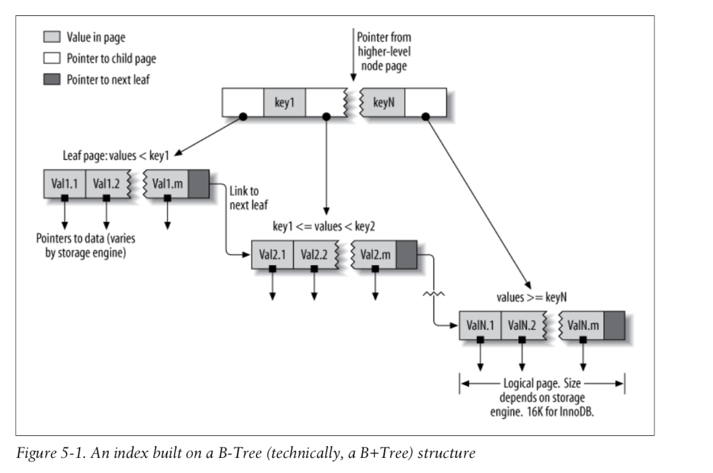

Creating truly optimal indexes will ofter require you to rewrite queries.
If you index more than one column, the column order is very important, because MySQL can only search efficiently on a leftmost prefix of the index. Creating an index on two columns is not the same as creating two separate single-column indexes.
Indexes are implemented in the storage engine layer, not the server layer.
Storage engines may use different indexs. InnoDB uses B+Trees.
-
MyISAM
- uses a prefix compression technique that makes indexes smaller.
- indexes refer to the indexed rows by their physical storage locations
-
InnoDB
- leaves valuse uncompressed in its indexs
- indexes refer to the indexed rows by their primary key values
B+Tree structure 
- Match the full value
- Match a leftmost prefix
- Match a column prefix
- Match a range of values
- Match one part exactly and match a range on another part
- Index-only queries
limitations of B-Tree indexes:
- Not useful if the lookup does not start from the leftmost side of the indexed columns.
- You can't skip columns in the index
- The storage engine can't optimize accesses with any columns to the right of the first range condition.
The column order is extremely important.
A hash index is built on a hash table and is useful only for exact lookups that use every column in the index. In MySQL only the Memory storage engine supports explicit hash indexes.
- Indexes reduce the amount of data the server has to examine
- Indexes help the serve avoid sorting and temporary tables
- Indexes turn random I/O into sequential I/O